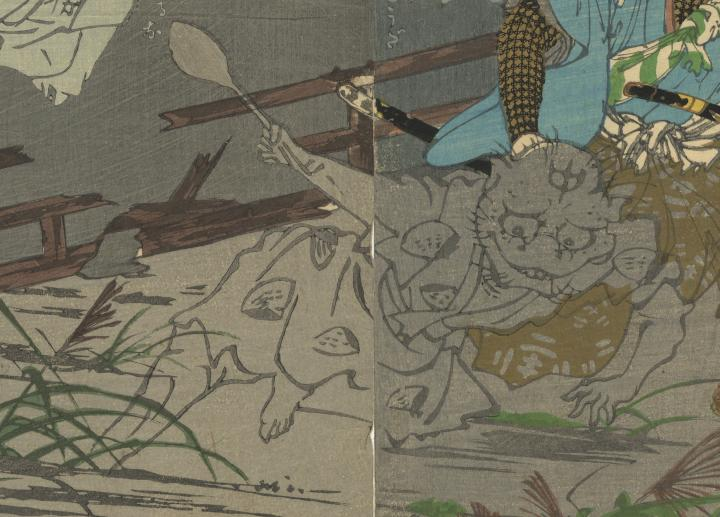

猫のような顔の妖怪が、手にしゃもじのようなものを持っている。蛤の文様の着物を着ている。
著作者：楳堂小國政／出典：親書誌：U426_nichibunken_0394：相馬舊御𠩄；ソウマ ノ フルゴショ／日付：2015／資源識別子：U426_nichibunken_0394_0001_0006
Copyright (c)2010- International Research Center for Japanese Studies, Kyoto, Japan. All rights reserved.